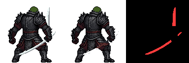
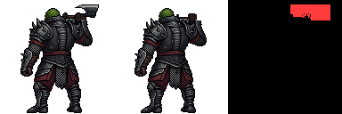
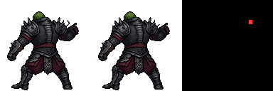

Package: Repair 1 Submission for Independent QA session 863ae631-5582-4955-a0ef-020d51692fbb (Gemini 3.8 Flash).
All 9 QA-accepted structural keys (F03, F04, F07 across all 3 cycles) are byte-for-byte identical to source.
Surgical pixel fixes executed strictly in Aseprite batch via Lua — zero API calls consumed, zero credits spent.
back_r-Sword Frame 06: Swoosh Blade Trail RemovedDiagnosis: 272 bright white/cyan pixels baked into body cel from pauldron (x=105, y=20) across loincloth down to right leg (x=30, y=110).
Correction: Cleared swoosh in sky and body; reconstructed red-brown leather tunic (#592d2b, #34181e), mail seam, inner calf, and boot edge. Bright pixels dropped from 284 to 4. 486 pixels modified, zero holes left.

Side-by-side comparison: Before (with swoosh) | After (clean body cel)back_l-Axe Frame 02: Embedded Axe Head Removed & Clenched Fist RebuiltDiagnosis: Iron axe blade (x=85..108, y=5..22) and brown wooden haft (x=70..85, y=16..18) embedded over right shoulder.
Correction: Cleared axe blade and haft; reconstructed clenched gauntlet/fist at x=83..92, y=15..20 using Orc V1 leather palette (#020203 outline, #261b17 shadow, #39241b base, #392b1f highlight). Clean anatomical bounding box without erasing or corrupting the arm. 703 pixels modified.

Side-by-side comparison: Before (with axe head) | After (clean clenched fist)back_l-Sword Frame 05: Black Hook Filament ClearedDiagnosis: 7-10px stray black filament protruding vertically above the right pauldron at x=94..98, y=28..33.
Correction: Surgically erased only the isolated 10-pixel hook filament, preserving authentic pauldron contour line at y=34. 30 pixels modified.

Side-by-side comparison: Before (with hook) | After (clean pauldron contour)